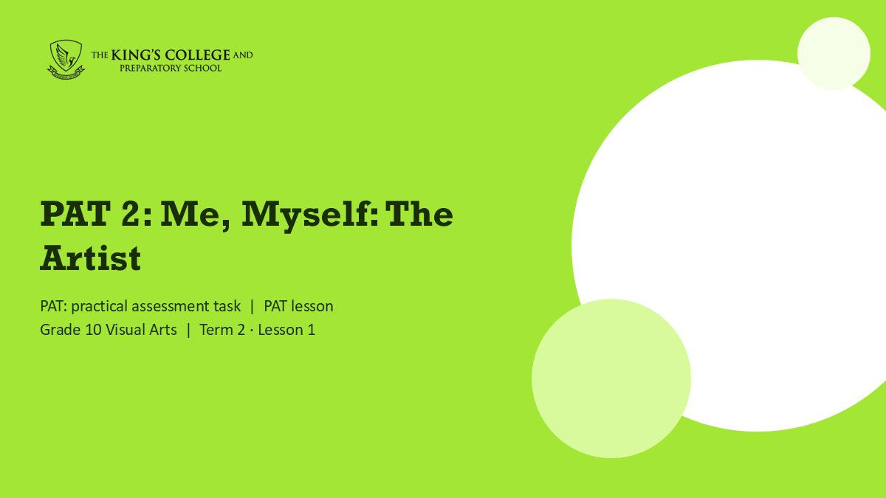

Term 2 · Lesson 1 · PAT lesson
PAT 2: Face Value brief and Me, Myself, the Artist
Start here
Today I will
- Understand the PAT 2 brief, its sections and its dates
- Take useful side-lit reference photos
- Start choosing two portrait artists for Me, Myself, the Artist
We say 'don't take it at face value'. What can a portrait show about a person that a passport photo cannot?
Words to Know
| Word | Meaning |
|---|---|
| Portrait | An artwork that shows a particular person, usually with a focus on the face. |
| Likeness | How closely a portrait resembles the sitter. |
| Side light | Light from one side that shows the shape of a face through strong shadows. |
| Applied research | Studying artists so that what you learn changes how you make your own work. |
| Motivation | Your reasons, with evidence, for a choice you made. |
Slides

Notes
The PAT 2 brief (a shorter PAT for an eight-week term): the activities, the final A3 portrait and the dates; Me, Myself, the Artist: researching two portrait artists (one from Africa) at home over five weeks; taking side-lit reference photos in pairs.
PAT 2 at a glance
- Activity 1: Proportion of the head and a tonal map of your own photo.
- Activity 2: The features: eye, nose, mouth and ear, on one A3 sheet.
- Activity 3: A reductive self-portrait in charcoal.
- Me, Myself, the Artist: Two portrait artists (one from Africa), researched mostly at home over five weeks.
- Final portrait: A3, graphite and one other medium, with a title and a rationale.
A good reference photo
- One strong light: Light from one side only; switch off the light from the other side.
- Plain background: A plain wall keeps the edges of the face clear.
- Several angles: Front, three-quarter and profile, so you can choose.
- Natural expression: Relaxed, not a posed smile.
- Your own photo: Taken by you or your partner, with permission, and kept private.
Look past the surface: the face is where the portrait starts, not where it ends.

People look at the outward appearance, but the Lord looks at the heart. What would you want a portrait of you to show that a quick glance would miss?
Practical
You need: PAT 2 brief, highlighters, phones or the class camera, desk lamp, VJ
The brief, the photos and the artists
- Highlight the brief: tasks in one colour, dates in another, questions in a third.
- In pairs at the lamp, take at least five photos of each other: front, three-quarter and profile.
- Choose your best photo and note why in one sentence; print it at A4 at home.
- List five portrait artists you find interesting, including at least two from Africa.
- Copy the five-week plan for Me, Myself, the Artist into your VJ with the due date.
- Write the PAT 2 theme, Face Value, in your own words.
PAT 2 issued (final hand-in Friday 18 June). Me, Myself, the Artist is due on Friday 11 June.
Test yourself
- Why is PAT 2 shorter than PAT 1?
- What makes side light useful for a portrait reference?
- When is Me, Myself, the Artist due?
Show answers
1. Term 2 has only eight teaching weeks before the mid-year exams. 2. Its shadows show the shape and form of the face. 3. Friday of Week 6 (11 June).
Finished early?
Think before you draw.
- Choose a person who matters to you.
- Write three words that describe who they are, not what they look like.
- Sketch a small symbol or object for each word.
- Which one could you include in a portrait?